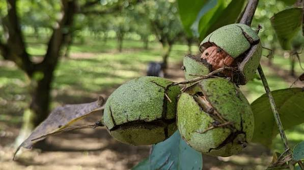

La Noix
du Quercy
Transformation


⟹ Savoir-faire & Terroir du Quercy ⟸
Le noyer est implanté dans le Quercy depuis des siècles, sur les coteaux argilo-calcaires du Lot où le climat offre des conditions idéales à sa culture. Dès le XVIIe siècle, le commerce de l'huile de noix fait la fortune de la région, expédiée par bateau depuis le port fluvial de Souillac, sur la Dordogne, jusqu'en Angleterre et en Hollande.

Avant la mécanisation, toute la filière reposait sur le travail manuel : le ramassage, puis le long et fastidieux « dénoisillage », où les énoiseuses brisaient patiemment chaque coquille à l'aide d'une tricote pour en extraire le cerneau. Cette huile de noix servait alors aussi bien à cuisiner qu'à s'éclairer ou à fabriquer du savon mou.
Le grand gel de 1956 détruit une large part de la noyeraie locale et entraîne l'abandon de nombreux moulins. Mais la filière se reconstruit progressivement, portée par la reconnaissance en AOP « Noix du Périgord » obtenue en 2004, qui consacre officiellement le savoir-faire des producteurs de la zone.
Avec 181 communes engagées, soit près d'un tiers de l'aire géographique de l'appellation, le Lot est aujourd'hui le deuxième département producteur de Noix du Périgord AOP, commercialisant indirectement environ 1 000 tonnes chaque année.
L'aire géographique de l'AOP « Noix du Périgord » s'étend sur 578 communes réparties entre la Dordogne (297), le Lot (181), la Corrèze (80) et la Charente (20), auxquelles s'ajoutent l'Aveyron et le Lot-et-Garonne pour l'huile de noix.
Ce vaste territoire bénéficie d'un climat et de sols argilo-calcaires particulièrement adaptés à la culture du noyer, permettant une production de noix d'une qualité régulière et reconnue.
Dans le Quercy, on estime qu'au XIXe siècle chaque commune possédait au moins un moulin à huile de noix, souvent associé au moulin à écraser les céréales — signe de l'importance économique de cette culture dans le paysage lotois.
AOP Noix du Périgord : reconnue depuis 2004 pour la noix fraîche, la noix sèche et les cerneaux, cette appellation garantit une production, une transformation et un conditionnement réalisés intégralement dans l'aire géographique définie.
AOP Huile de noix du Périgord : pour obtenir ce label, au moins la moitié des cerneaux utilisés doivent être de variété Franquette, et toutes les étapes doivent avoir lieu dans la zone d'appellation.
Un syndicat actif : le Syndicat de l'AOP veille au respect du cahier des charges et fait la promotion de la Noix du Périgord auprès du grand public.
Une production suivie : fin 2017, 982 producteurs étaient engagés dans la démarche AOP pour 4 640 hectares de noyeraie.
Les moulins à huile traditionnels encore en activité dans le Lot proposent visite, dégustation gratuite et vente directe de noix, cerneaux et huile de noix.
Les fermes productrices réparties sur les 181 communes lotoises de l'aire AOP vendent noix fraîches, sèches et cerneaux, nature ou caramélisés.
Les marchés locaux du département proposent la noix du Quercy aux côtés des autres spécialités : Rocamadour AOP, foie gras, safran et confits.
La Fête de la Noix célèbre chaque année ce fruit emblématique du Sud-Ouest et rassemble producteurs et amateurs de toute l'aire de l'appellation.